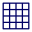

There are 2 parts of tool bar, one is the expandable one on the top of the canvas, other one is the floating one followed with the Apple Pencil.
-
Show recent used tools, the numbers of recent tools can be
configured from Settings.
-
Show all supported painting tools, such as brushes, knifes and
so on.
-
Show or hide palette.
-
Expand or collapse the tool bar.
-
Dry current layer.
-
Switch to dryer mode.
-
Switch to wetter mode.

Clean artworks.

Show or hide Lights editor.
-
Save current painting.
-
Save as, save current painting as a different name.

Import image to current
painting with Image Editor.

Export current painting as
stardard image.
-
Open layer manager to manage
multiple layers.
- 
Open assistance manager to manage Grids,
Guide lines, Tracing and References.
-
Open online help contents with browser.
-
Open settings view.
-
Back to gallery.
It's a tool bar which can be floated with the Apple Pencil.

Undo last drawing operation. This also can be done with gestures.

Redo last drawing operation. This also can be done with gestures.
-
Color picker, pick color from drawn artworks.
-
Pattern picker, it not like color picker to pick up single
color, it will pick up mixed colors with all states such as
thickness, position of colors and so on.
More details can be found in Painting
Tools.
-
Clean current painting tool.
-
Switch to dryer drawing and wetter drawing.
-
Turn on/off the auto reset of painting tools.
Once the color of a painting tool is used up, auto reset on
means to reset the color to the beginning state, and the auto reset
off means you must to pick up new color from the bowl of palette
manually.
-
Thickness, which is used to control the thickness of color
when drawing.
More details can be found in Painting
Tools.